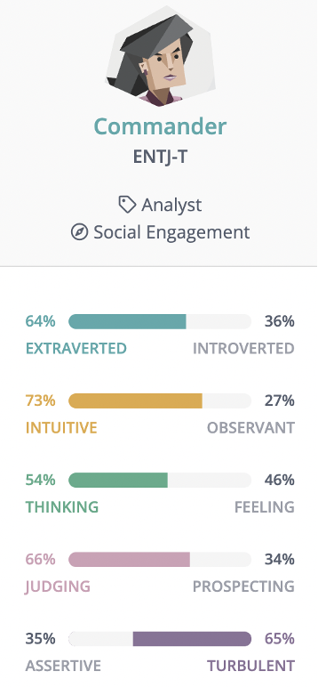
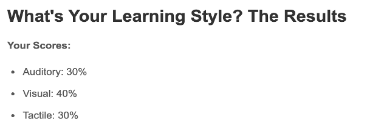
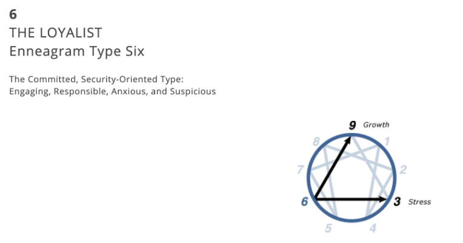

I'm in my first semester of the Bachelor’s in Information Technology program and am currently based in Malaysia right now as the Australian borders haven’t opened for international students. I come from a Malay, Chinese and Japanese background and I’d like to believe that I’ve done well in keeping in touch with my cultural roots and integrating them into my life. My hobbies include crocheting, reading, journaling and watching horror movies. I also like analyzing the horror media afterwards, especially since horror reflects the current fear and paranoia the society is facing.
I have quite limited IT experience, as I only did basic C programming before, as well as Computer Principles - learning about the software and hardware of a computer. However, I’m interested in learning more and would like to master a number of programming languages during my degree in RMIT. My interests in IT are quite broad but mostly revolve around topics which require data analysis. I’m interested in algorithms, machine learning as well as technology-integrated fashion.
These test results can be helpful to the team composition as it provides a clear overview of my strengths and weaknesses. The results can help determine my position in the group and allow me to challenge myself by participating in activities that I can improve on such as being more empathetic and understanding of my team members. Since my team is aware of my weaknesses, they can also inform me when I am not being as effective or patient as I should be. This can also help reduce group conflict and maximize productivity.
  